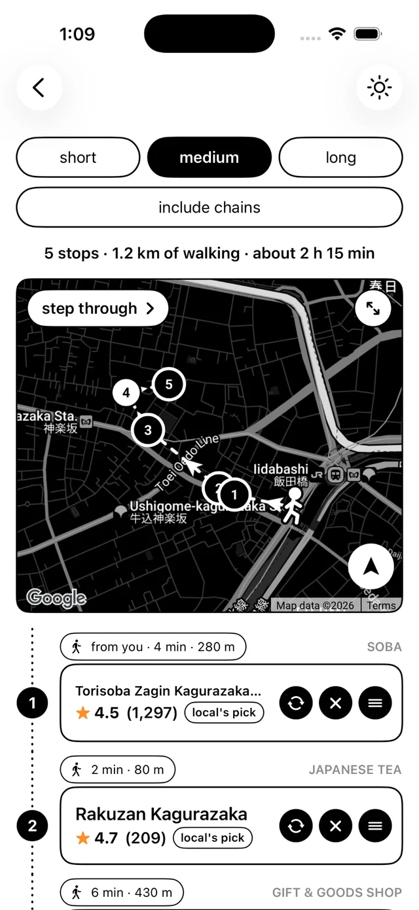

sanpo walks
Tell Sanpo how long you want to wander: short, medium or long. It builds a walking route of local stops around you, with a map, the distance and a time estimate.
Each stop shows what it is, how far away it is, its rating, and a "local's pick" badge for the places locals love. Turn on "include chains" if you want them, or step through the route one stop at a time.
